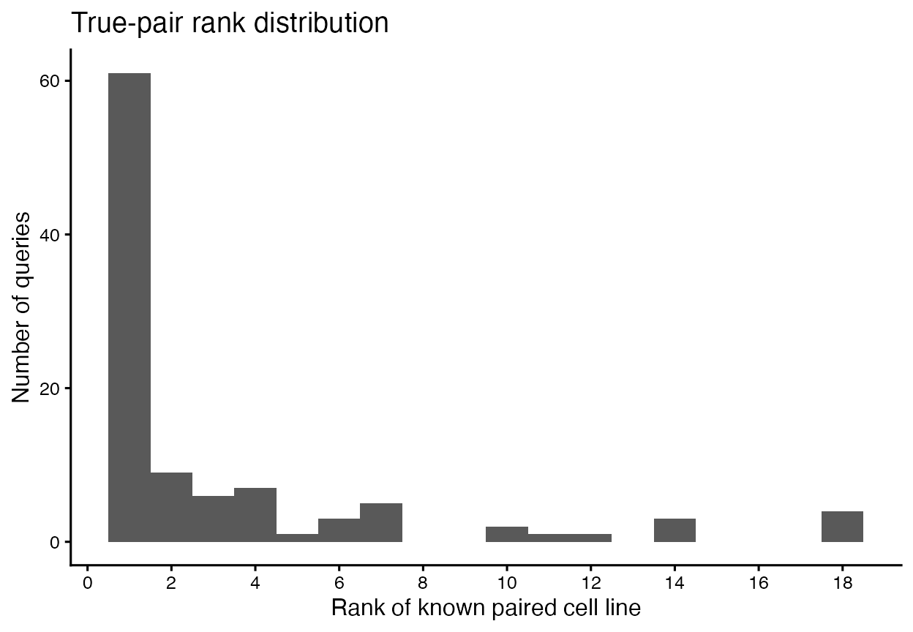
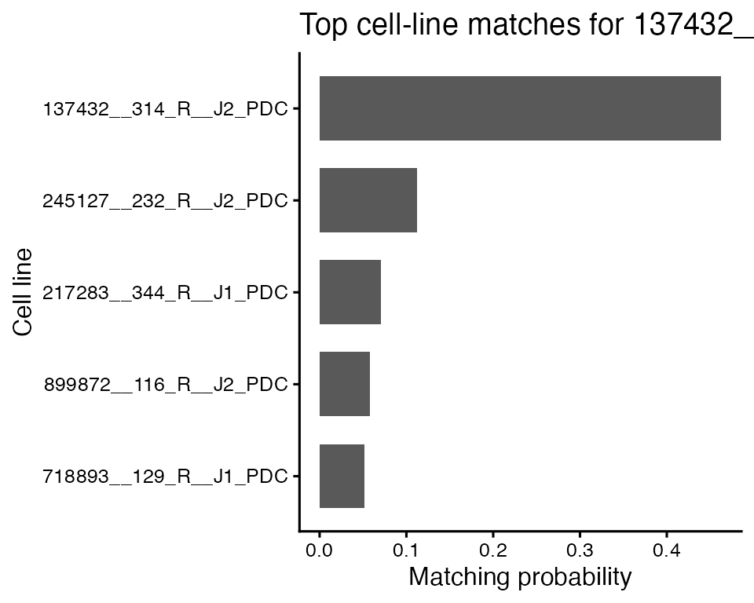

Tumor2Line Tutorial
Tumor2Line developers
2026-10-14
Source:vignettes/Tumor2Line-tutorial.Rmd
Tumor2Line-tutorial.Rmd1. Overview
Tumor2Line matches a query population to candidate cancer cell lines using transcriptomic similarity at the population level. Query samples can be patient tumors, PDOs, PDXs, organoids, or other tumor-derived models. The default molecular representation uses scaled PCA, followed by population-aware unbalanced optimal transport (uOT) matching.

The Overview of Tumor2Line
This tutorial uses a small PDMR-format example in which the query samples are tumors and known tumor-cell line pairs are available. The pairing information is used only for evaluation and is not required for Tumor2Line matching.
The tutorial demonstrates the complete workflow:
- read the bundled example files directly from
inst/extdata; - inspect and preprocess the data;
- construct the scaled-PCA representation;
- run
run_tumor2line(); - interpret query-specific cell-line rankings;
- evaluate known pairs using Top1, Top3, MRR and true-pair rank;
- visualize the main results;
- adapt the workflow to unpaired tumors, PDOs, PDXs, or other query populations.
3. Input data
3.1 Three logical input types
The bundled PDMR-format example uses:
PDMR_tumor_expr.tsv
PDMR_cellline_expr.tsv
PDMR_phenotype.tsvThe two expression tables have samples in rows. SampleID
identifies each sample and the remaining columns contain non-negative
gene-expression values. In this example, the phenotype table
contains:
-
SampleID: sample identifier; -
PairID: known query-cell line pair identifier used only for evaluation; -
SampleClass: biological sample type (tumororcelllinein this example); -
lineage: cancer lineage used to define the default candidate pool.
Tumor2Line does not require PairID or
SampleClass for matching. The roles query and
cellline are inferred from the two expression inputs.
3.2 Read the bundled example
query_expr_path <- system.file("extdata", "PDMR_tumor_expr.tsv", package = "Tumor2Line")
cell_expr_path <- system.file("extdata", "PDMR_cellline_expr.tsv", package = "Tumor2Line")
phenotype_path <- system.file("extdata", "PDMR_phenotype.tsv", package = "Tumor2Line")
query_expr <- utils::read.delim(query_expr_path, check.names = FALSE, stringsAsFactors = FALSE)
cellline_expr <- utils::read.delim(cell_expr_path, check.names = FALSE, stringsAsFactors = FALSE)
phenotype <- utils::read.delim(phenotype_path, check.names = FALSE, stringsAsFactors = FALSE)The first column of each expression table is
SampleID:
query_expr[1:3, 1:6]
#> SampleID A1BG A1CF A2M A2ML1 A3GALT2
#> 1 137432__314_R__ORIGINATOR 0.05 0.00 85.23 29.77 0.00
#> 2 147771__066_R1__ORIGINATOR 2.35 0.24 162.77 0.00 1.19
#> 3 161853__170_R__ORIGINATOR 0.90 0.00 421.98 0.02 0.00
cellline_expr[1:3, 1:6]
#> SampleID A1BG A1CF A2M A2ML1 A3GALT2
#> 1 137432__314_R__J2_PDC 0.02 0.00 0.07 16.97 0.00
#> 2 147771__066_R1__J1_PDC 0.02 0.78 0.00 0.08 0.03
#> 3 161853__170_R__J1_PDC 2.42 0.00 0.00 0.00 0.00
head(phenotype)
#> SampleID PairID PatientID SpecimenID
#> 1 137432__314_R__ORIGINATOR 137432__314-R 137432 314_R
#> 2 137432__314_R__J2_PDC 137432__314-R 137432 314_R
#> 3 147771__066_R1__ORIGINATOR 147771__066-R1 147771 066_R1
#> 4 147771__066_R1__J1_PDC 147771__066-R1 147771 066_R1
#> 5 161853__170_R__ORIGINATOR 161853__170-R 161853 170_R
#> 6 161853__170_R__J1_PDC 161853__170-R 161853 170_R
#> PDMType SampleClass SampleType lineage TCGA_lineage
#> 1 Patient/Originator Specimen tumor Tumor OV OV
#> 2 PDC: Mixed Tumor Culture cellline CellLine OV OV
#> 3 Patient/Originator Specimen tumor Tumor COAD COADREAD
#> 4 PDC: Mixed Tumor Culture cellline CellLine COAD COADREAD
#> 5 Patient/Originator Specimen tumor Tumor UCEC UCEC
#> 6 PDC: Mixed Tumor Culture cellline CellLine UCEC UCEC
#> model_lineage
#> 1 OV
#> 2 OV
#> 3 COAD
#> 4 COAD
#> 5 UCEC
#> 6 UCEC4. Data preprocessing
prepare_tumor2line_data() converts the expression
populations and optional metadata into the internal structure used
throughout the package.
prepared <- prepare_tumor2line_data(
query_expr = query_expr,
cellline_expr = cellline_expr,
phenotype = phenotype,
sample_id_col = "SampleID",
pair_col = "PairID",
lineage_col = "lineage",
sample_type_col = "SampleClass",
query_type = "tumor",
min_mean_tpm = 0.1,
min_detected_fraction = 0.1
)The preprocessing step:
- intersects genes shared by the query and cell-line populations;
- verifies that expression values are numeric, finite and non-negative;
- generates
log2(TPM + 1)expression; - assigns algorithmic roles (
queryandcellline) from the two expression inputs; - attaches optional lineage, sample-type and pairing annotations;
- constructs known pairs only when
pair_colis supplied.
prepared$cohort_summary
#> # A tibble: 6 × 5
#> lineage Query_number Cell_line_number Paired_number Total_samples
#> <chr> <int> <int> <int> <int>
#> 1 COAD 25 27 25 52
#> 2 PAAD 23 24 23 47
#> 3 SKCM 14 19 14 33
#> 4 HNSC 14 15 14 29
#> 5 UCEC 14 15 14 29
#> 6 OV 13 14 13 27
head(prepared$metadata)
#> SampleID SampleRole SampleType lineage PairID
#> 1 137432__314_R__ORIGINATOR query tumor OV 137432__314-R
#> 2 147771__066_R1__ORIGINATOR query tumor COAD 147771__066-R1
#> 3 161853__170_R__ORIGINATOR query tumor UCEC 161853__170-R
#> 4 174316__266_R__ORIGINATOR query tumor HNSC 174316__266-R
#> 5 175126__011_R__ORIGINATOR query tumor COAD 175126__011-R
#> 6 188146__221_R__ORIGINATOR query tumor COAD 188146__221-RBecause the PDMR example contains known pairs,
prepared$gold_pairs is available:
head(prepared$gold_pairs)
#> PairID lineage Query_ID CellLine_ID
#> 1 137432__314-R OV 137432__314_R__ORIGINATOR 137432__314_R__J2_PDC
#> 2 147771__066-R1 COAD 147771__066_R1__ORIGINATOR 147771__066_R1__J1_PDC
#> 3 161853__170-R UCEC 161853__170_R__ORIGINATOR 161853__170_R__J1_PDC
#> 4 174316__266-R HNSC 174316__266_R__ORIGINATOR 174316__266_R__J1_PDC
#> 5 175126__011-R COAD 175126__011_R__ORIGINATOR 175126__011_R__J3_PDC
#> 6 188146__221-R COAD 188146__221_R__ORIGINATOR 188146__221_R__J1_PDCFor an unpaired dataset, use pair_col = NULL. Tumor2Line
matching remains fully available; only ground-truth evaluation is
omitted.
5. Scaled-PCA molecular representation
Tumor2Line constructs a shared molecular space across the query and cell-line populations.
representation <- build_scaled_pca_representation(
input = prepared,
n_variable_genes = 10000,
pca_variance_threshold = 0.90,
max_pcs = NULL
)
representation$n_pcs
#> [1] 104
head(representation$variance)
#> PC_index explained_variance cumulative_variance
#> 1 1 0.10634038 0.1063404
#> 2 2 0.09511317 0.2014535
#> 3 3 0.08144264 0.2828962
#> 4 4 0.05145615 0.3343523
#> 5 5 0.05022584 0.3845782
#> 6 6 0.03521398 0.4197922The default representation follows:
TPM
-> log2(TPM + 1)
-> filter / select variable genes
-> joint gene-wise scaling
-> PCA
-> choose PCs reaching 90% cumulative variance
-> z-score retained PC scoresWith max_pcs = NULL, the number of retained PCs is
determined by pca_variance_threshold. A finite
max_pcs can be supplied only when an explicit upper limit
is desired.
6. Run Tumor2Line
For most users, run_tumor2line() is the main entry
point. It runs preprocessing, scaled PCA, uOT matching, ranking and
optional known-pair evaluation in one call.
result <- run_tumor2line(
query_expr = query_expr,
cellline_expr = cellline_expr,
phenotype = phenotype,
sample_id_col = "SampleID",
pair_col = "PairID",
lineage_col = "lineage",
sample_type_col = "SampleClass",
query_type = "tumor",
n_variable_genes = 10000,
pca_variance_threshold = 0.90,
max_pcs = NULL,
candidate_scope = "within_lineage",
distance = "euclidean",
epsilon = 0.1,
rho_query = 1,
rho_cellline = 1
)
result
#> Tumor2Line result
#> Queries: 103
#> Cell lines: 114
#> Lineages: 6
#> Selected genes: 10000
#> Selected PCs: 104
#> PCA threshold: 0.9
#> Maximum PCs: NULL (no user-defined limit)
#> Candidate scope: within_lineage
#> Ranking rows: 2095
#>
#> Known-pair evaluation:
#> # A tibble: 1 × 6
#> n_query Top1_accuracy Top3_accuracy MRR median_true_rank mean_true_rank
#> <int> <dbl> <dbl> <dbl> <int> <dbl>
#> 1 103 0.602 0.728 0.692 1 3.77The parameters are explicit so that the analysis is reproducible. Tumor2Line does not tune these parameters against the known PDMR pairs.
7. Understand the result object
A Tumor2LineResult contains:
names(result)
#> [1] "ranking" "top_matches" "input" "representation"
#> [5] "parameters" "evaluation"The main components are:
-
ranking: all query-cell-line candidate combinations and their ranks; -
top_matches: the rank-1 cell line for each query; -
input: standardized expression data and metadata; -
representation: scaled-PCA representation and PCA information; -
parameters: parameters used in the analysis; -
evaluation: known-pair evaluation when ground truth is available.
7.1 Candidate ranking
head(result$ranking)
#> # A tibble: 6 × 15
#> Method lineage Query_ID CellLine_ID transport_mass matching_probability
#> <chr> <chr> <chr> <chr> <dbl> <dbl>
#> 1 Tumor2Line COAD 147771__06… 147771__06… 0.00412 0.146
#> 2 Tumor2Line COAD 147771__06… 814844__32… 0.00337 0.120
#> 3 Tumor2Line COAD 147771__06… 339189__12… 0.00273 0.0969
#> 4 Tumor2Line COAD 147771__06… 884544__14… 0.00205 0.0729
#> 5 Tumor2Line COAD 147771__06… 981439__25… 0.00202 0.0717
#> 6 Tumor2Line COAD 147771__06… 825966__06… 0.00132 0.0471
#> # ℹ 9 more variables: query_total_mass <dbl>, cellline_total_mass <dbl>,
#> # cost <dbl>, rank <int>, n_candidates <int>, candidate_scope <chr>,
#> # OT_converged <lgl>, OT_iterations <int>, OT_final_delta <dbl>Important columns are:
-
Query_ID: focal query sample; -
CellLine_ID: candidate cell line; -
transport_mass: raw pair-specific mass assigned by the uOT transport plan. It represents the amount of transport allocated between a query and a candidate cell line before query-wise normalization; -
matching_probability: row-normalized transport mass assigned by uOT; -
cost: molecular distance used by uOT; -
rank: query-specific candidate rank; -
n_candidates: size of the candidate pool.
For each query, rank = 1 is the highest-priority
candidate.
7.2 Rank-1 matches
result$top_matches
#> # A tibble: 103 × 15
#> Method lineage Query_ID CellLine_ID transport_mass matching_probability
#> <chr> <chr> <chr> <chr> <dbl> <dbl>
#> 1 Tumor2Line COAD 147771__0… 147771__06… 0.00412 0.146
#> 2 Tumor2Line COAD 175126__0… 175126__01… 0.0148 0.410
#> 3 Tumor2Line COAD 188146__2… 188146__22… 0.0339 0.907
#> 4 Tumor2Line COAD 255893__2… 255893__29… 0.0286 0.839
#> 5 Tumor2Line COAD 259778__0… 259778__04… 0.0281 0.730
#> 6 Tumor2Line COAD 274332__3… 274332__33… 0.0211 0.504
#> 7 Tumor2Line COAD 339189__1… 381356__30… 0.0104 0.257
#> 8 Tumor2Line COAD 381356__3… 381356__30… 0.00792 0.212
#> 9 Tumor2Line COAD 392184__1… 392184__16… 0.0126 0.296
#> 10 Tumor2Line COAD 411828__3… 411828__35… 0.0276 0.850
#> # ℹ 93 more rows
#> # ℹ 9 more variables: query_total_mass <dbl>, cellline_total_mass <dbl>,
#> # cost <dbl>, rank <int>, n_candidates <int>, candidate_scope <chr>,
#> # OT_converged <lgl>, OT_iterations <int>, OT_final_delta <dbl>7.3 Top candidates for each query
top5 <- get_top_matches(result, n = 5)
head(top5, 10)
#> # A tibble: 10 × 15
#> Method lineage Query_ID CellLine_ID transport_mass matching_probability
#> <chr> <chr> <chr> <chr> <dbl> <dbl>
#> 1 Tumor2Line OV 137432__3… 137432__31… 0.0374 0.463
#> 2 Tumor2Line OV 137432__3… 245127__23… 0.00909 0.112
#> 3 Tumor2Line OV 137432__3… 217283__34… 0.00569 0.0704
#> 4 Tumor2Line OV 137432__3… 899872__11… 0.00472 0.0584
#> 5 Tumor2Line OV 137432__3… 718893__12… 0.00418 0.0517
#> 6 Tumor2Line COAD 147771__0… 147771__06… 0.00412 0.146
#> 7 Tumor2Line COAD 147771__0… 814844__32… 0.00337 0.120
#> 8 Tumor2Line COAD 147771__0… 339189__12… 0.00273 0.0969
#> 9 Tumor2Line COAD 147771__0… 884544__14… 0.00205 0.0729
#> 10 Tumor2Line COAD 147771__0… 981439__25… 0.00202 0.0717
#> # ℹ 9 more variables: query_total_mass <dbl>, cellline_total_mass <dbl>,
#> # cost <dbl>, rank <int>, n_candidates <int>, candidate_scope <chr>,
#> # OT_converged <lgl>, OT_iterations <int>, OT_final_delta <dbl>For a single query:
example_query <- result$input$query_ids[1]
get_top_matches(result, n = 5, query_id = example_query)
#> # A tibble: 5 × 15
#> Method lineage Query_ID CellLine_ID transport_mass matching_probability
#> <chr> <chr> <chr> <chr> <dbl> <dbl>
#> 1 Tumor2Line OV 137432__31… 137432__31… 0.0374 0.463
#> 2 Tumor2Line OV 137432__31… 245127__23… 0.00909 0.112
#> 3 Tumor2Line OV 137432__31… 217283__34… 0.00569 0.0704
#> 4 Tumor2Line OV 137432__31… 899872__11… 0.00472 0.0584
#> 5 Tumor2Line OV 137432__31… 718893__12… 0.00418 0.0517
#> # ℹ 9 more variables: query_total_mass <dbl>, cellline_total_mass <dbl>,
#> # cost <dbl>, rank <int>, n_candidates <int>, candidate_scope <chr>,
#> # OT_converged <lgl>, OT_iterations <int>, OT_final_delta <dbl>8. Why population context matters
A pairwise method such as Pearson correlation scores each query-cell line pair independently. In contrast, uOT estimates a transport plan for the query and candidate cell-line populations jointly. Therefore, the ranking for one query is informed by the population-level structure of the matching problem.
When lineage information is available, Tumor2Line can perform joint matching within lineage:
Queries from one lineage
+
Candidate cell lines from the same lineage
-> scaled-PCA distance matrix
-> uOT transport plan
-> query-specific cell-line rankingsUse candidate_scope = "global" when lineage information
is unavailable or when a global candidate pool is desired.
9. Evaluate known PDMR pairs
The bundled PDMR-format example contains known pairs, so the true paired cell line can be located in each query’s ranking.
evaluation <- result$evaluation
evaluation$summary
#> # A tibble: 1 × 6
#> n_query Top1_accuracy Top3_accuracy MRR median_true_rank mean_true_rank
#> <int> <dbl> <dbl> <dbl> <int> <dbl>
#> 1 103 0.602 0.728 0.692 1 3.77The principal metrics are:
-
Top1 accuracy: proportion of queries for which the
known paired cell line has
true_rank = 1; -
Top3 accuracy: proportion with
true_rank <= 3; -
MRR: mean reciprocal rank,
mean(1 / true_rank); - true-pair rank: rank of the known paired cell line for each query.
9.1 Query-level true-pair ranks
head(evaluation$pair_ranks)
#> # A tibble: 6 × 15
#> lineage Query_ID True_CellLine_ID true_rank Top1 Top3 reciprocal_rank
#> <chr> <chr> <chr> <int> <lgl> <lgl> <dbl>
#> 1 OV 137432__314_R_… 137432__314_R__… 1 TRUE TRUE 1
#> 2 COAD 147771__066_R1… 147771__066_R1_… 1 TRUE TRUE 1
#> 3 UCEC 161853__170_R_… 161853__170_R__… 1 TRUE TRUE 1
#> 4 HNSC 174316__266_R_… 174316__266_R__… 1 TRUE TRUE 1
#> 5 COAD 175126__011_R_… 175126__011_R__… 1 TRUE TRUE 1
#> 6 COAD 188146__221_R_… 188146__221_R__… 1 TRUE TRUE 1
#> # ℹ 8 more variables: normalized_rank <dbl>, rank_percentile <dbl>,
#> # n_candidates <int>, transport_mass <dbl>, matching_probability <dbl>,
#> # query_total_mass <dbl>, cellline_total_mass <dbl>, cost <dbl>Each row corresponds to one query. Top1 and
Top3 are logical indicators derived from
true_rank.
9.2 Performance by lineage
evaluation$lineage
#> # A tibble: 6 × 7
#> lineage n_query n_candidates Top1_accuracy Top3_accuracy MRR
#> <chr> <int> <int> <dbl> <dbl> <dbl>
#> 1 COAD 25 27 0.6 0.64 0.648
#> 2 HNSC 14 15 0.429 0.714 0.609
#> 3 OV 13 14 0.615 0.769 0.719
#> 4 PAAD 23 24 0.696 0.826 0.774
#> 5 SKCM 14 19 0.357 0.571 0.504
#> 6 UCEC 14 15 0.857 0.857 0.879
#> # ℹ 1 more variable: median_true_rank <dbl>This is useful when candidate-pool sizes and query numbers differ among lineages.
10. Visualization

10.2 True-pair rank distribution
plot_true_pair_ranks(result)
Lower true-pair ranks indicate better recovery. Rank 1 means Tumor2Line selected the known paired cell line as its first recommendation.
10.3 Top candidates for one query
plot_top_matches(result, query_id = example_query, n = 5)
This plot is often the most directly useful result for a new query sample because it displays the top candidate experimental models and their relative matching probabilities.
11. Using your own data
11.1 Unpaired tumor samples
Known pairs are not required:
query_expr <- read.delim("tumor_gene_expression.tsv", check.names = FALSE)
cellline_expr <- read.delim("cellline_gene_expression.tsv", check.names = FALSE)
phenotype <- read.delim("phenotype.tsv", check.names = FALSE)
result <- run_tumor2line(
query_expr = query_expr,
cellline_expr = cellline_expr,
phenotype = phenotype,
sample_id_col = "SampleID",
pair_col = NULL,
lineage_col = "model_lineage",
query_type = "tumor",
candidate_scope = "within_lineage"
)
get_top_matches(result, n = 5)11.2 PDO or other query populations
The first population does not need to be a tumor population:
result <- run_tumor2line(
query_expr = pdo_expr,
cellline_expr = cellline_expr,
phenotype = metadata,
sample_id_col = "SampleID",
lineage_col = "lineage",
query_type = "PDO",
candidate_scope = "within_lineage"
)11.3 No metadata or lineage information
A global analysis can be run using expression data alone:
result <- run_tumor2line(
query_expr = query_expr,
cellline_expr = cellline_expr,
phenotype = NULL,
candidate_scope = "global"
)In this setting result$evaluation is NULL
because no ground-truth pairing information was supplied.
12. Full PDMR data preparation for package development
The package developer workflow is kept in:
data-raw/debug.RPlace the three original files in data-raw/raw/:
M3_paired_tumor_gene_expression.tsv
M3_paired_cellline_gene_expression.tsv
M3_paired_phenotype.tsvRunning data-raw/debug.R validates and standardizes them
and writes the four development outputs under
inst/extdata/:
PDMR_tumor_expr.tsv
PDMR_cellline_expr.tsv
PDMR_phenotype.tsv
PDMR_pairs.tsvThe tutorial itself reads the bundled example files directly with
system.file() and does not depend on a separate package I/O
helper function.
13. Session information
sessionInfo()
#> R version 4.4.3 (2025-02-28)
#> Platform: aarch64-apple-darwin20
#> Running under: macOS Sequoia 15.6.1
#>
#> Matrix products: default
#> BLAS: /Library/Frameworks/R.framework/Versions/4.4-arm64/Resources/lib/libRblas.0.dylib
#> LAPACK: /Library/Frameworks/R.framework/Versions/4.4-arm64/Resources/lib/libRlapack.dylib; LAPACK version 3.12.0
#>
#> locale:
#> [1] en_US.UTF-8/en_US.UTF-8/en_US.UTF-8/C/en_US.UTF-8/en_US.UTF-8
#>
#> time zone: Asia/Shanghai
#> tzcode source: internal
#>
#> attached base packages:
#> [1] stats graphics grDevices utils datasets methods base
#>
#> other attached packages:
#> [1] Tumor2Line_0.1.2
#>
#> loaded via a namespace (and not attached):
#> [1] gtable_0.3.6 jsonlite_2.0.0 dplyr_1.1.4 compiler_4.4.3
#> [5] tidyselect_1.2.1 dichromat_2.0-0.1 jquerylib_0.1.4 systemfonts_1.3.1
#> [9] scales_1.4.0 textshaping_1.0.4 yaml_2.3.10 fastmap_1.2.0
#> [13] ggplot2_4.0.0 R6_2.6.1 labeling_0.4.3 generics_0.1.4
#> [17] knitr_1.50 htmlwidgets_1.6.4 tibble_3.3.0 desc_1.4.3
#> [21] RColorBrewer_1.1-3 bslib_0.9.0 pillar_1.11.1 rlang_1.1.6
#> [25] utf8_1.2.6 cachem_1.1.0 xfun_0.54 S7_0.2.0
#> [29] fs_1.6.6 sass_0.4.10 cli_3.6.5 pkgdown_2.1.3
#> [33] withr_3.0.2 magrittr_2.0.4 digest_0.6.37 grid_4.4.3
#> [37] rstudioapi_0.17.1 lifecycle_1.0.4 vctrs_0.6.5 evaluate_1.0.5
#> [41] glue_1.8.0 farver_2.1.2 ragg_1.5.0 rmarkdown_2.30
#> [45] tools_4.4.3 pkgconfig_2.0.3 htmltools_0.5.8.1